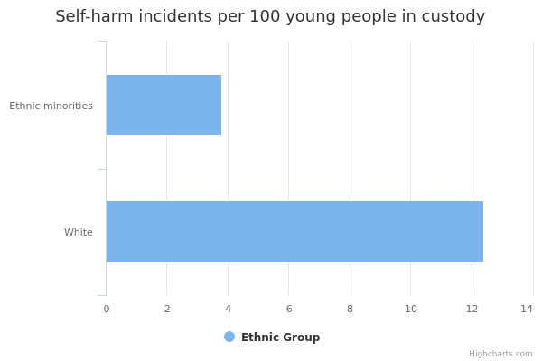
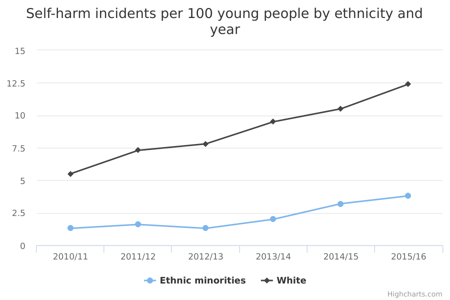

Self-harm by young people in custody
The main facts and figures show that:
-
in 2015/16, the rate of self-harm by young White people in custody was more than 3 times that of young people from ethnic minorities in custody
-
there were 3.8 incidents of self-harm per 100 ethnic minority young people in custody per month in 2015/16
-
there were 12.4 incidents of self-harm per 100 White young people in custody per month in 2015/16
Things you need to know
The data records the number of occasions on which an act of self-harm was reported, not the number of individuals that self-harmed, nor how often individual young people harmed themselves.
Estimates based on a larger number of respondents are generally more reliable. The smaller numbers of respondents from Other ethnic groups mean that estimates for these groups are less reliable than estimates for White people.
What the data measures
This data measures rates of self-harm by young people in custody by ethnicity. Each incident of self-harm by a young person in custody is counted and their ethnicity recorded. Rates are expressed per 100 young people in custody per month (on average across the financial year) from 2010/11 to 2015/16.
Self-harm in prison custody is defined as any act where a prisoner deliberately harms themselves, regardless of how they do so, what their intent is or how badly they injure themselves.
“Young person” and “youth” refers to anyone between the ages of 10 and 17.
The data is taken from the Youth Justice Board for England and Wales (YJB) publication of Youth Justice annual statistics.
Why these ethnic categories were chosen
The ethnicity of youths in custody is presented in 2 categories:
- White, which includes White British and White ethnic minorities
- Other, which includes all other ethnic minorities
Incidents of self-harm by young people in custody by ethnicity

| White | 12.4 | 766.4 | 95.3 |
|---|---|---|---|
| Other | 3.8 | 524.0 | 20.2 |
Summary
The main points from this data are:
-
there were 12.4 incidents of self-harm per 100 White young people in custody per month in 2015/16
-
there were 3.8 incidents of self-harm per 100 young people from Other ethnic groups in custody per month in 2015/16
Download image and data
Incidents of self-harm by young people in custody by ethnicity and year

| White | Other | |||||
| 2010/11 | 5.5 | 1,911.4 | 105.3 | 1.3 | 971.2 | 12.9 |
|---|---|---|---|---|---|---|
| 2011/12 | 7.3 | 1,727.7 | 125.9 | 1.6 | 1,039.8 | 16.9 |
| 2012/13 | 7.8 | 1,381.3 | 107.5 | 1.3 | 860.8 | 11.4 |
| 2013/14 | 9.5 | 1,025.9 | 97.0 | 2.0 | 628.3 | 12.7 |
| 2014/15 | 10.5 | 866.1 | 91.0 | 3.2 | 549.8 | 17.8 |
| 2015/16 | 12.4 | 766.4 | 95.3 | 3.8 | 524.0 | 20.2 |
Summary
The main point from this data is:
- rates of self-harm per 100 prisoners have risen consistently for both White young people and young people from Other ethnic groups over the period 2011 to 2015
Download image and data
Methodology and type of data
Type of data
Administrative data
Purpose of data source
Administrative data used for internal management information
Methodology
Self-harm is measured as the rate per 100 prisoners (taken from prison population monthly snapshots, averaged across a 12-month period).
Ethnicity was recorded for more than 95% of incidents of self-harm. Because of the very small number of incidents of self-harm where ethnicity is not known, this data has been excluded from the analysis.
Administrative data sources are reported as recorded. Information is provided by prisons and signed off locally.
Data wardens review the data, but as with all large administrative surveys errors and omissions can occur.
Rounding
Rates per 100 to 1 decimal place